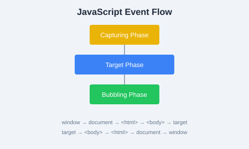

Control flow determines the order in which your code executes. JavaScript provides conditionals, loops, and iteration tools to control program execution.
let score = 85;
if (score >= 90) {
console.log("Grade: A");
} else if (score >= 75) {
console.log("Grade: B");
} else if (score >= 60) {
console.log("Grade: C");
} else {
console.log("Grade: F");
}Use switch when comparing a single value against many possible cases:
let day = 3;
let dayName;
switch (day) {
case 1:
dayName = "Monday";
break;
case 2:
dayName = "Tuesday";
break;
case 3:
dayName = "Wednesday";
break;
case 4:
dayName = "Thursday";
break;
case 5:
dayName = "Friday";
break;
default:
dayName = "Weekend";
}
console.log(dayName); // "Wednesday"break in each case unless you intentionally want fall-through. The default clause runs when no case matches.
A shorthand for simple if/else conditions:
let age = 20;
let status = age >= 18 ? "Adult" : "Minor";
console.log(status); // "Adult"for (let i = 0; i < 5; i++) {
console.log("Iteration:", i);
}
// Prints 0, 1, 2, 3, 4let count = 0;
while (count < 5) {
console.log(count);
count++;
}Executes the body at least once, then checks the condition:
let x = 0;
do {
console.log(x);
x++;
} while (x < 3);Iterates over iterable values (arrays, strings, etc.):
let colors = ["red", "green", "blue"];
for (let color of colors) {
console.log(color);
}Iterates over enumerable property keys of an object:
let person = { name: "Alice", age: 30 };
for (let key in person) {
console.log(key + ":", person[key]);
}break exits a loop entirely. continue skips the current iteration and moves to the next one.
for (let i = 0; i < 10; i++) {
if (i === 3) continue; // Skip 3
if (i === 7) break; // Stop at 7
console.log(i);
}
// Prints: 0, 1, 2, 4, 5, 6
for...of for arrays and for...in for objects. Avoid for...in on arrays since it iterates over keys (indices as strings) and may include inherited properties.
while loop. Finally, create a switch statement that maps a numeric month (1—12) to its name and logs it.